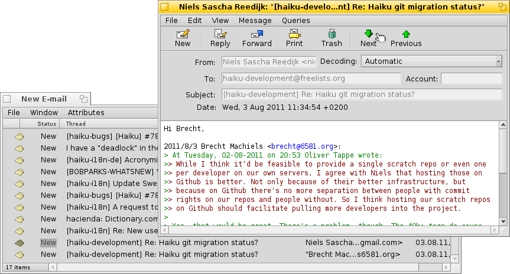
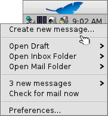

| Índice |
|
Haiku's mail system Using labels Using queries More tips |
Taller: Administrando el Correo Electrónico
Este taller echa un vistazo a como administrar el correo electrónico bajo Haiku. Asume que los servicios de correo estan configurados correctamente con las preferencias de Correo electrónico y que está familiarizado con las características básicas de la aplicación Mail.
 Sistema de correos de Haiku
Sistema de correos de Haiku
Si viene a Haiku desde otros sistemas operativos, probablemente esté acostumbrado a aplicaciones grandes como Microsoft Outlook o Mozilla Thunderbird. Debe configurarlos ingresando toda la información sobre direcciones de servidor de correo, etc., y cada uno utiliza su propia base de datos para sus contactos. Ellos se encargan de enviar y recibir sus mensajes y los almacenan en un archivo especial grande.
Puede ser engorroso cambiar su cliente de correo, requiriendo exportar, importar, y convertir mensajes, configuraciones y demás. Usar más de un cliente para revisar que más hay disponible puede ser un lío.
El sistema de correo de Haiku es diferente. Se descompone en pequeños módulos separados.
El mail_daemon se encarga de la comunicación con sus servidores de correo. Las preferencias de Correo electrónico es el lugar central para configurar sus cuentas de correo electrónico y que tan frecuente se revisan, entre otras cosas.
Cada mensaje que es buscado o enviado se guarda como un sólo archivo de correo, con su información de encabezado (como remitente, asunto y fecha) y estado (como Nuevo, Respondido, Enviado) en atributos BFS. Esto permite buscarlos/filtrarlos usando las rápidas consultas de Haiku.

Cuando cada correo es un archivo separado, verlos se vuelve igual de fácial que navegar a través de una carpeta (o resultado de una consulta) de imagenes con ShowImage. Si deja abierta la ventana del Tracker, verá cómo se mueve la selección del archivo visualizado actualmente mientras usa los botoner siguiente/anterior para moverse entre ellos.
Debido a que son archivos independientes, es posible utilizar un visor diferente al Mail de Haiku, y no causa ningún problema.
Del mismo modo, crear un nuevo mensaje resulta en sólo otro archivo que es entregado al mail_daemon, que se encarga de enviarlo. La gestión de contactos se delega a la aplicación Gente.
En pocas palabras, donde otros clientes de correo hacen de todo, desde comunicarse con los servidores de correo hasta mostrar todos sus correos y herramientas para buscar y filtrarlos, Haiku utiliza una cadena de herramientas más pequeñas y de gestión de archivos:
El mail_daemon para buscar/enviar correo y guardarlo como archivos normales.
Ventanas y consultas de Tracker para buscar y mostrar archivos de correo electrónico.
La aplicación Mail para ver archivos de correo y crear nuevos mensajes basados en gestión de contactos a nivel de sistema por la aplicación Gente app.
El uso de de consultas y Tracker en particular para gestionar correos es una idea poderosa. La experiencia que adquiere puede ser transferida a cualquier otro problema que vaya a lidiar con archivos. Ya sean imágenes, música, video, contactos o cualquier otro documento, el uso del Tracker está en el centro de la administración de archivos.
Además, las mejoras que existan en cualquiera de estas áreas del sistema serán de beneficio no sólo para el uso del correo, sino todas las aplicaciones que la utilicen.
Using labels
Cuando revise sus mensajes recién llegados, podría querer regresar a ver algunos de ellos con más cuidado más tarde. Si bien podría usar del menú de Mail para conservarlos en su consulta de "Mensajes nuevos", las cosas se pueden amontonar así…
Una solución es iniciar un mensaje de respuesta y guardarlo como borrador. Pero si no espera escribir una respuesta, y sólo quiere volver a leer el mensaje más tarde, hacer eso no es idóneo.

Better use to create a new label with or choose an existing label to categorize your mail. For example, you could call the label "Later", and then query for that when you find more time.
Or you use different labels for specific projects. For example, I created a label "HUG" (for "Haiku user guide") under which I collect every mail that may influence the contents of the user guide, like commit messages about code changes that alter or introduce some feature or anything else I feel could improve the user guide.
In any case, try to keep the label name short. That way it always fits in a normally wide "Label" column in Tracker.
Once you've dealt with the email, you can use to clear the email's label attribute.
Labels are saved in ~/config/settings/Mail/labels, which is opened when you choose . Here you can add, delete or rename your labels. Conveniently, each label file is also a query, meaning you can doubleclick it to start a query for emails with that label. Handy to check first before deleting a label that you think you don't need anymore.
You don't have to open an email with the Mail application to set its label. With the Tracker add-ons Label as… you can select some email files and set or remove their label in one go.
Haciendo uso de consultas
Al tener una carpeta especificada para almacenar todos sus correos, la puede abrir, y ¡listo! ahí está su correo. Sin embargo, con el tiempo la carpeta se vuelve poblada y podría tomar más y más tiempo mostrar todos los mensajes, con miles de archivos y sus atributos que deben ser analizados y ordenados. Además, generalmente no estará interesado en mensajes de hace 2 años sobre príncipes nigerianos y sus problemas de herencias…
¡Consultas al rescate!
By using queries, you can narrow down the view of your mails. Actually, the mailbox icon in the Deskbar uses queries. Right-click the icon to open its context menu:

El submenú hace una consulta del estado "Draft" (Borrador), que es establecido por Mail cuando guarda un mensaje.
y son solamente vínculos a carpetas regulares.
El submenú es populado por una consulta de correo con el estado "New" (nuevo), esa misma consulta se utiliza para cambiar el ícono del buzón de correo para mostrar cartas en él.
You can add your own queries (or folders, applications, scripts etc.) to that context menu too, by putting them or links to them into ~/config/settings/Mail/Menu Links. In the screenshot above, for example, the label folder ~/config/settings/Mail/labels was linked there, to have quick access to labeled emails from the the mailbox icon of the Deskbar.
Ejemplos de consultas
Aquí hay algunos ejemplos de consultas útiles:
 |
 |
| This finds all mails with the label "Later". | Este encuentra todos los mensajes de los últimos 2 días. |
 |
 |
| Esta encuentra todos los mensajes de Ingo Weinhold de las últimas 2 semanas. | Esta encuentra todas las entradas de la lista Haiku commit de las últimas 12 horas. |
Más recomendaciones
Si guarda una consulta como "Plantilla de consulta" (Query template) en vez de "Consulta" (Query), cuando la invoque no verá la ventana con resultados, si no la ventana de Buscar… De esa manera puede intercambiar fácilmente la cadena de búsqueda por la del asunto o el remitente, por ejemplo, o cambiar el límite de tiempo de "2 días" a "3 días".
Si activa el "filtro de tecleo anticipado" (type-ahead filtering) en las Preferencias del Tracker, eso le permitirá filtrar el resultado de una consulta aún más rapidamente. A menudo es suficiente hacer una consulta por todos los correos de los últimos 3 días y luego seguir con el filtrado de tecleo anticipado a partir de ahí. La gran ventaja es que no necesita especificar exactamente cuál atributo debe buscar, pues todos los atributos mostrados son considerados cuando se está filtrando.
When you're managing your emails via queries - and why wouldn't you? - you should configure a DefaultQueryTemplate that shows all the email attributes you normally want to see in a query result window, like Status, From, Subject, When.
First, you create a folder /boot/home/config/settings/Tracker/DefaultQueryTemplates/text_x-email. Then do one of your usual email queries and change the displayed attributes and window size and position of the result window to your liking. Now simply from its menu, open the newly created text_x-email folder, and there.